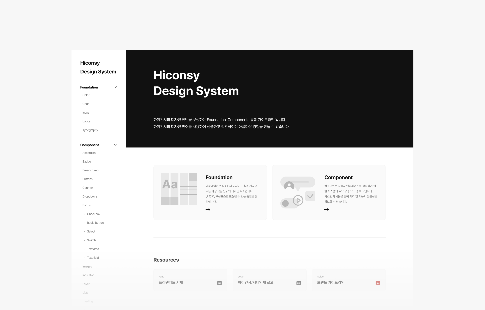
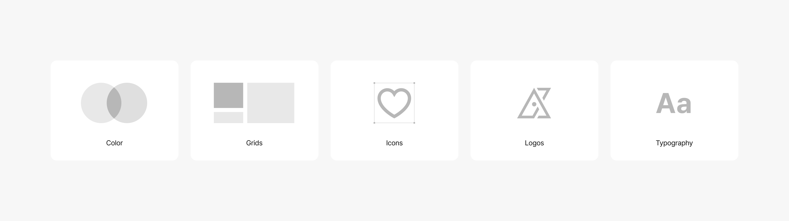
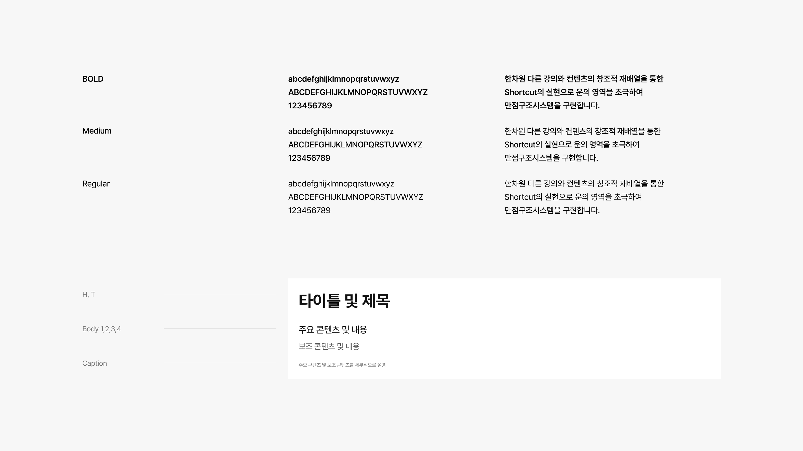
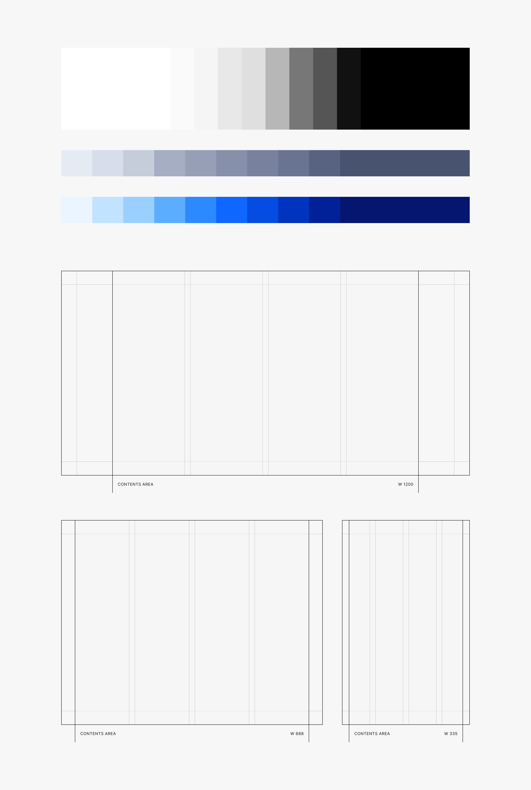
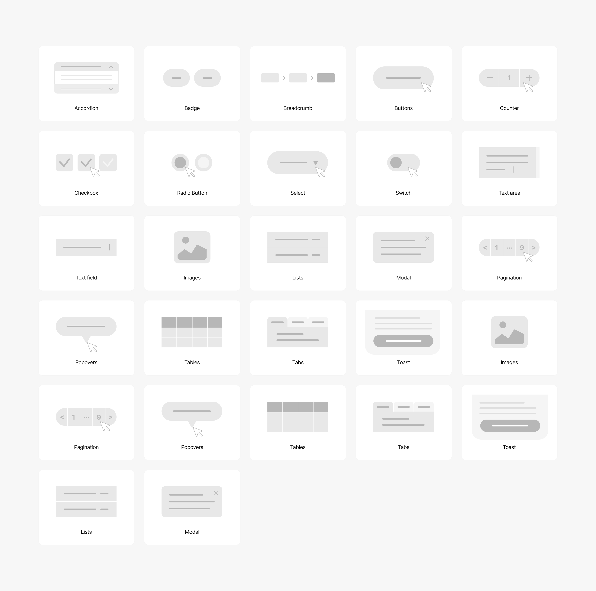

하이컨시 디자인 시스템
브랜드의 일관성을 유지하고, 디지털 제품 전반에서 효율적이고 체계적인 UI/UX 설계를 지원하기 위해 구축된 디자인 시스템
Foundation과 Component를 통해 색상, 그리드, 아이콘, 타이포그래피 같은 기본 요소부터 버튼, 폼, 모달 등 사용자 인터페이스 컴포넌트까지 통합 관리하여 협업 효율과 제품 완성도를 높임

현안 → 전략
01
일관성 부족
서비스별·디자이너별로 UI 스타일이 상이해
브랜드 정체성이 약화됨
Foundation 구축
컬러·그리드·아이콘·로고·타이포그래피 등 기본 규칙을 정의해
제품 전반에서 동일한 시각 언어 제공
02
재사용성 낮음
유사한 컴포넌트가 중복 개발되어 리소스 낭비가 발생
Component 라이브러리화
버튼·모달·입력창·리스트·토스트 등 핵심 UI 요소를 표준화해
디자이너와 개발자가 동일 자산을 재사용
03
협업 비효율
디자이너와 개발자 간 전달 체계가 명확하지 않아
커뮤니케이션 비용 증가
확장성 부족
새로운 서비스나 기능을 추가할 때 기존 디자인 자산을
재활용하기 어려움
04
리소스 중앙 관리
폰트·로고·브랜드 가이드라인을 한 곳에서 접근 가능하도록
제공해 누구나 쉽게 다운로드하고 활용
지속적 업데이트
디자인·개발 진행 상황을 명시해 현재 상태를 공유하고,
새로운 요구사항을 반영해 시스템을 확장
적용 시나리오
신규 디자이너
디자인 시스템 문서로 빠른 온보딩 →
컬러·타이포·컴포넌트 규칙 확인 후 즉시 적용
디자인 단계
회원가입 UI 설계 시 기존 Input, Button, Checkbox
활용 → 빠른 제작과 브랜드 일관성 유지
개발 협업
개발자는 컴포넌트 스펙을 참조해 동일 UI 구현 →
중복 개발 방지, QA 효율화
운영 · 확장 단계
다크모드 추가 시 Color Palette 확장 →
전체 서비스에 자동 반영되어 동일 경험 제공
Highlight 01 · Foundation
Foundation
Color·Grids·Icons·Logos·Typography가 개별 화면이 아닌 하나의 문서 안에서 서로 참조되도록 구성해, 어떤 페이지를 펼쳐도 같은 브랜드로 읽히게 설계

프리텐다드 하나로 통일한, ENG/KR 타이포그래피
Bold · Medium · Regular 웨이트별로 영문·숫자·한글 샘플과 실제 적용 예시를 함께 정의해, 어떤 화면에서도 같은 무게감의 텍스트를 사용할 수 있도록 구성

컬러, 그리드
Color : Gray Scale, Sd Navy, Sd Blue 3개 팔레트로 구성해 브랜드 톤앤매너와 시스템 상태(정보·강조·비활성 등)를 색상 단계로 구분
Grids : 디바이스별 Contents Area 폭을 고정해, 화면이 바뀌어도 콘텐츠가 흔들리지 않도록 기준을 정의

Highlight 02 · Component
Component
Accordion부터 Toast까지 상태값(hover·disabled·error 등)을 함께 정의해, 디자이너와 개발자가 같은 스펙을 보고 같은 결과물을 만들 수 있도록 구성

결과
일관성 부족을 Foundation으로, 중복 개발을 Component로 해결
리소스 중앙화와 지속적 업데이트로 협업과 확장까지 함께 확보
01 · 일관성 부족
Foundation 구축으로 해결
02 · 재사용성 낮음
Component 라이브러리화로 해결
03 · 협업 비효율
리소스 중앙 관리로 해결
04 · 확장성 부족
지속적 업데이트로 해결